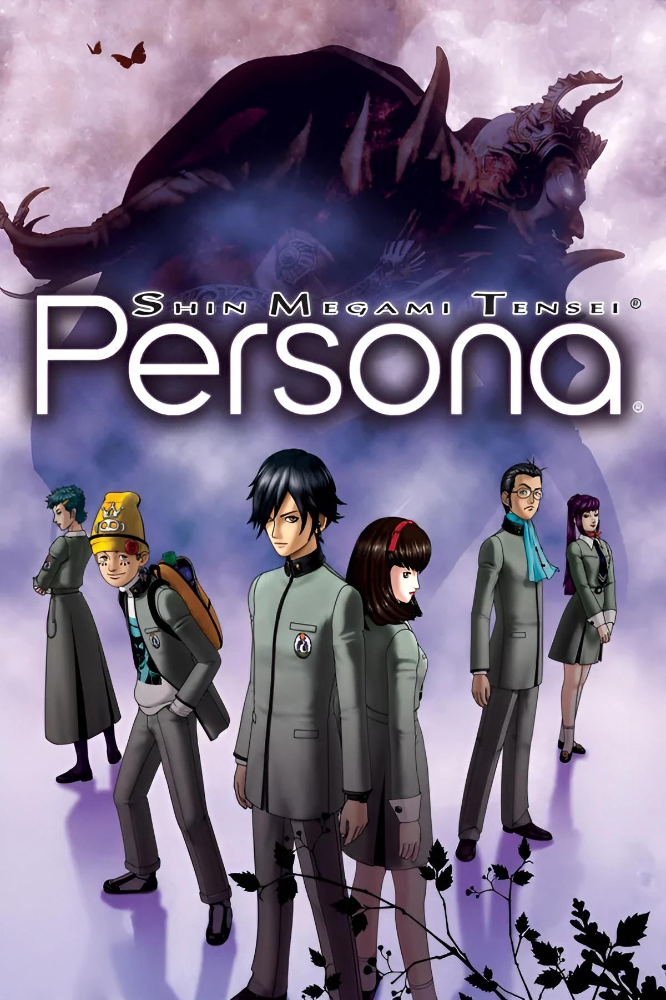

|  |
Persona 1Release date: 20 September 1996 Revelations: Persona is a 1996 role-playing video game developed and published by Atlus. It is the first entry in the Persona series, itself a subseries of the Megami Tensei franchise, and the first role-playing entry in the series to be released in the west. The story focuses on a group of high school students as they are confronted by a series of supernatural incidents. After playing a fortune-telling game, the group each gain the ability to summon Personas, the multiple selves within them. Using this power under the guidance of Philemon, a benevolent being representing humanity's subconscious, the group face off against multiple forces that threaten the world. Gameplay revolves around the characters navigating environments around their town and fighting enemies using their Personas. During the course of the game, the player can create new Personas for battle using spell cards gained in battle or by talking with enemies. |
×